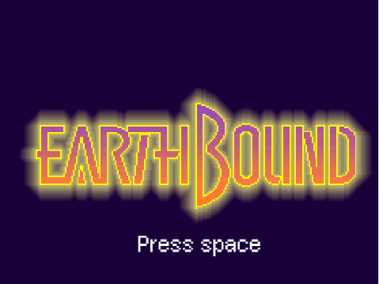

Final Project

My final project is an Earthbound grade made in Scratch. Earthbound is an rpg created by Shigesato Itoi. It follows the adventure of Ness as he battles all types of weird enemies. I used a lot of gif images for the PSI effects and text boxes.